Visit Glasgow
Food spots
Glasgow is a flourishing place for a variety of cultural food spots
Here are some of our top picks!
-
Oaka-Supercity: Located on George Street, Oaka-Supercity offers a fusion of Asian cuisines with a modern twist. Enjoy a vibrant atmosphere and delicious dishes. 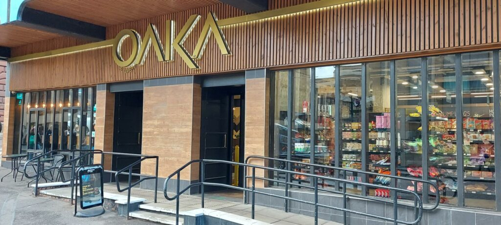 -
Cafe Andaluz: Nestled in Ashton Lane, Cafe Andaluz serves authentic Spanish tapas in a cozy setting. Explore a variety of flavors and enjoy a taste of Spain in Glasgow. 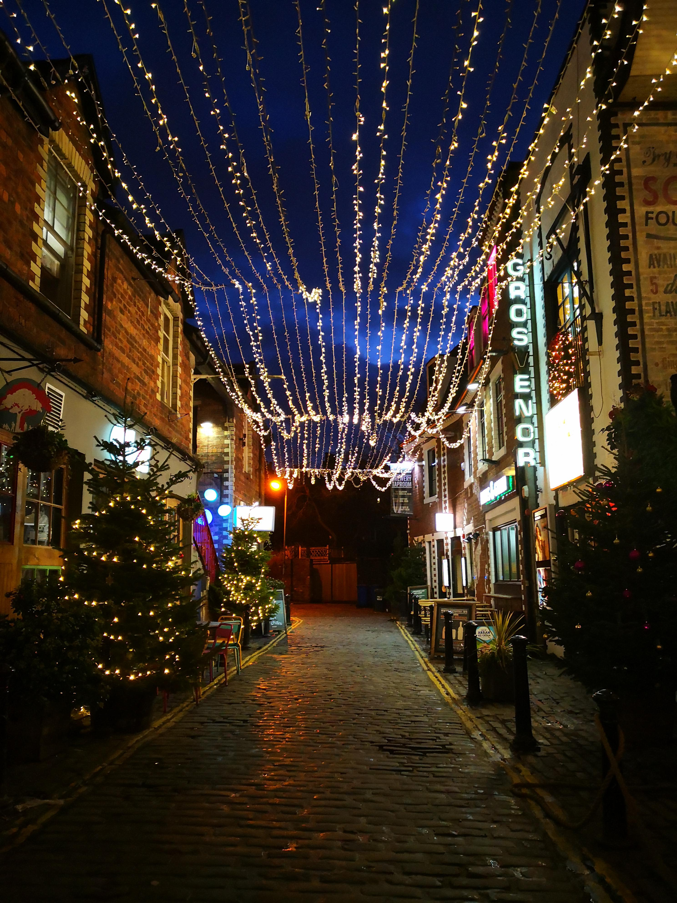 -
Bread Meats Bread: Situated on 65 St Vincent Street, Bread Meats Bread is a go-to spot for gourmet burgers and sandwiches. Indulge in mouthwatering creations made with high-quality ingredients. 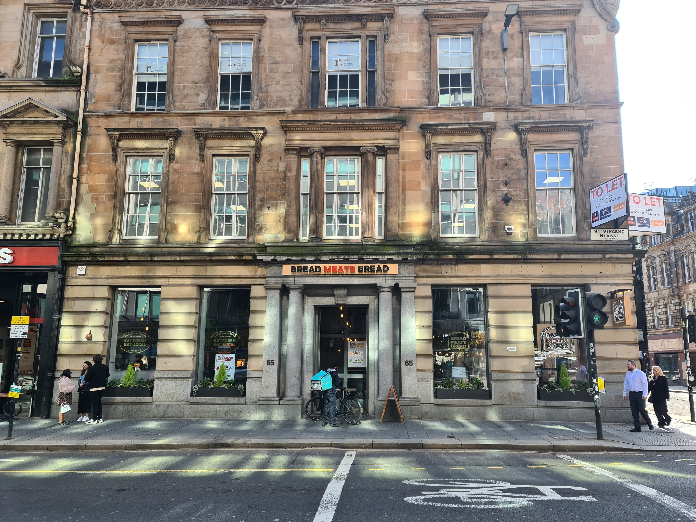 -
Glaschu: Located at 32 Royal Exchange Square, Glaschu offers a modern take on Scottish cuisine. Experience innovative dishes inspired by local flavors in a stylish setting. 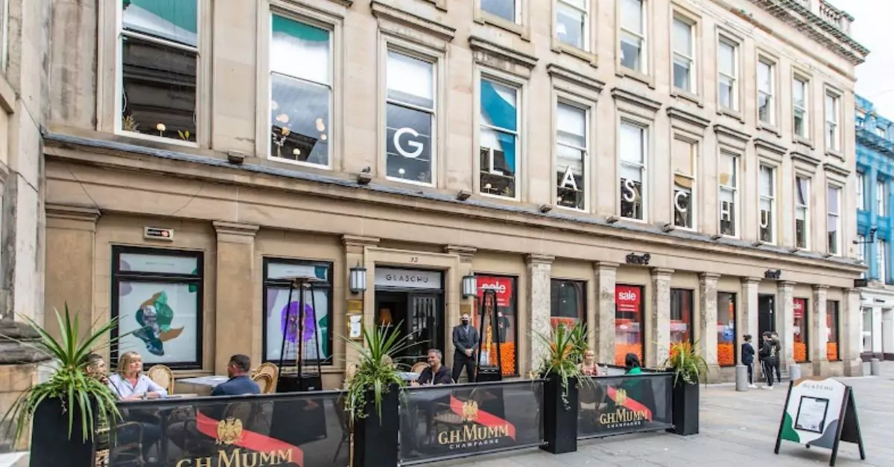 -
Mowgli: Found at 78 St Vincent Street, Mowgli serves up authentic Indian street food with bold flavors and spices. Explore a diverse menu and enjoy an unforgettable dining experience. 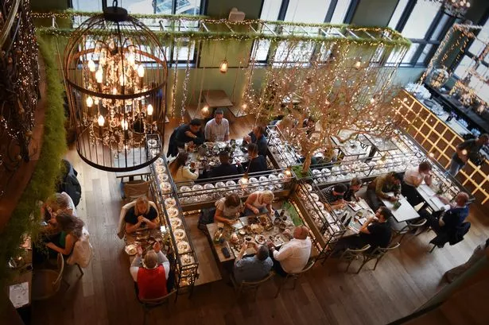
City Mural Trail
The City Center Mural Trail in Glasgow unveils a tapestry of captivating street art, reflecting the city's cultural dynamism. Explore alleyways and streets adorned with vibrant murals, each telling its own compelling story.Parks
-
Victoria Park: Victoria Park offers scenic green spaces, floral displays, and leisure facilities for visitors to enjoy. Take a relaxing stroll or participate in various outdoor activities. 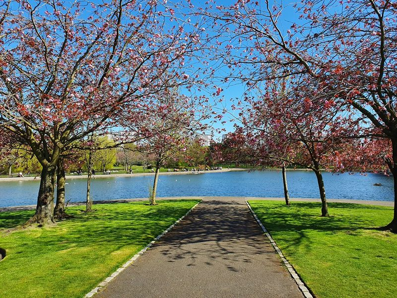 -
Kelvingrove Park: Kelvingrove Park is a picturesque parkland featuring a river, walking paths, and historic landmarks. Explore its beauty and cultural attractions. 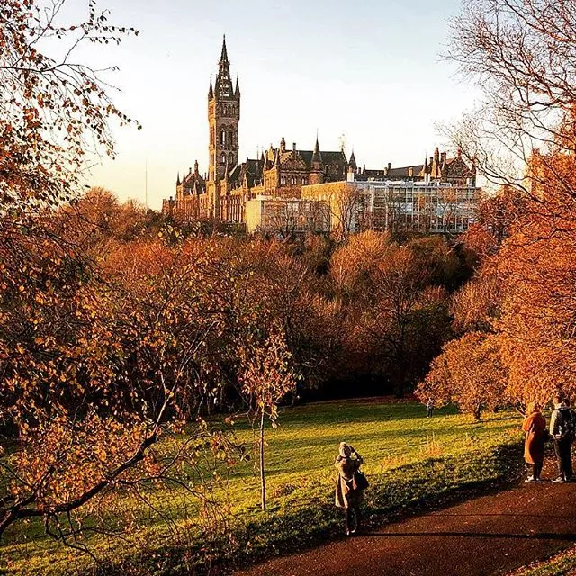 -
Botanic Gardens: The Botanic Gardens boast stunning botanical collections, glasshouses, and tranquil spaces. Immerse yourself in nature's beauty and serenity. 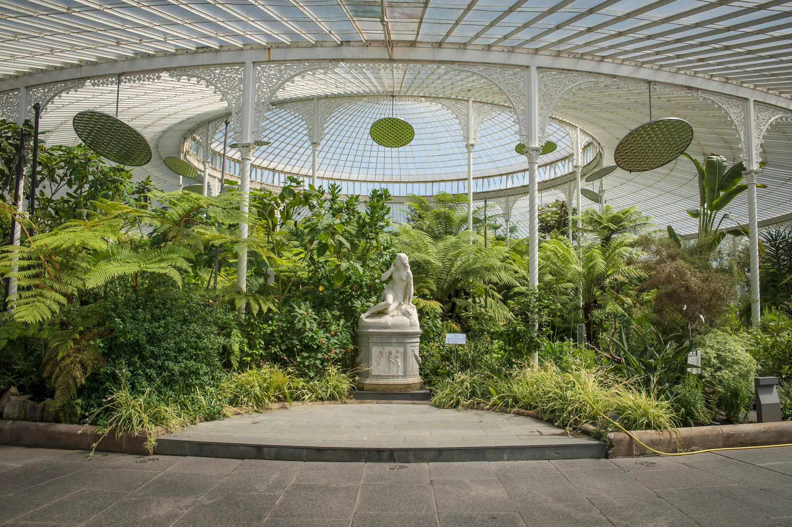 -
Pollock Park: Pollock Park offers expansive woodlands, scenic trails, and historical attractions such as Pollock House. Discover its natural and cultural treasures. 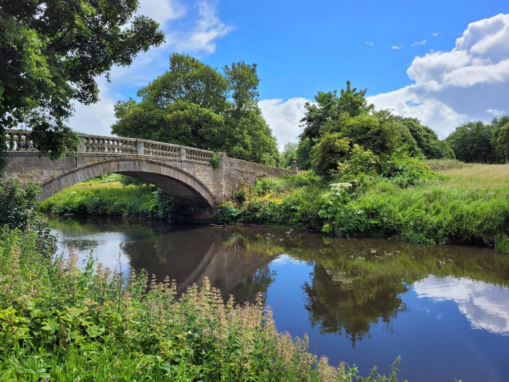 -
Glasgow Green: Glasgow Green is a historic parkland featuring monuments, gardens, and event spaces. Experience its rich heritage and recreational opportunities.
Shopping
-
City Center: Glasgow's City Center is a premier shopping destination featuring high-street stores, luxury boutiques, and vibrant markets. Shop to your heart's content. 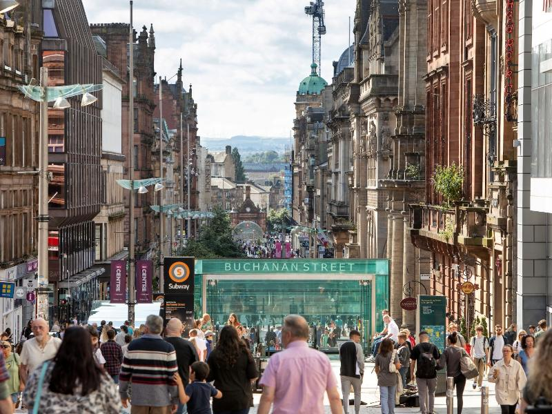 -
The Hidden Lane: The Hidden Lane is a charming enclave of studios, workshops, and artisan shops. Discover unique crafts and support local artists. 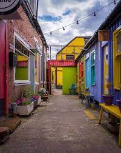 -
The Fort: The Fort Shopping Park offers a wide range of retailers, dining options, and entertainment facilities. Enjoy a day of retail therapy and relaxation.
-
Silverburn: Silverburn Shopping Centre features over 100 stores, restaurants, and leisure amenities. Experience convenient shopping and dining in a modern setting. 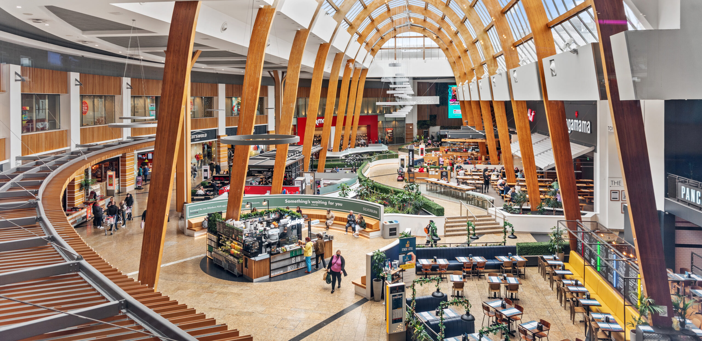
Museums
-
Kelvingrove Art Gallery and Museum: Kelvingrove Art Gallery and Museum houses an extensive collection of artworks, artifacts, and exhibitions. Explore diverse cultural treasures. 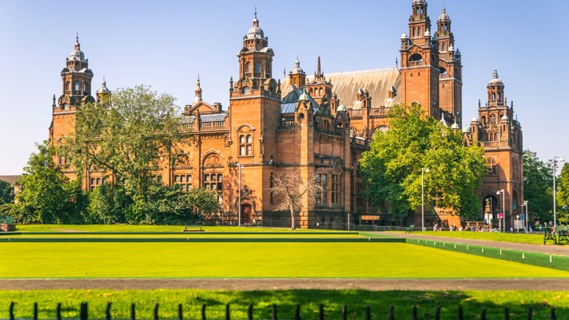 -
Riverside Museum: Riverside Museum showcases Glasgow's transport heritage with interactive exhibits and vintage vehicles. Discover the city's transportation history. 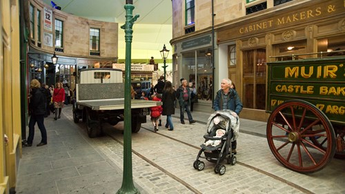 -
Peoples' Palace: Peoples' Palace offers insights into Glasgow's social history and culture through displays and archives. Learn about the city's people and their stories. 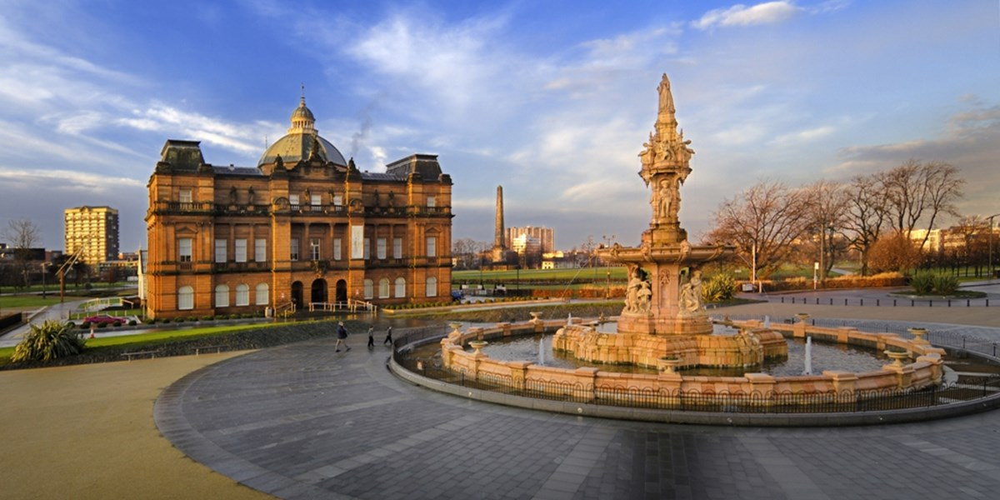
Pride Glasgow
Glasgow Pride is an annual LGBTQ+ pride festival celebrating diversity, equality, and inclusion. Join the vibrant parade and festivities to show support and solidarity.
Theaters
-
Kings Theater: Kings Theater hosts a variety of theatrical performances, including plays, musicals, and comedy shows. Experience live entertainment in a historic venue. 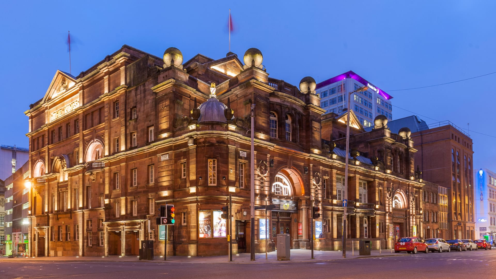 -
The Pavilion: The Pavilion Theatre offers a diverse program of entertainment, from pantomimes to concerts. Enjoy a night out filled with laughter and music. 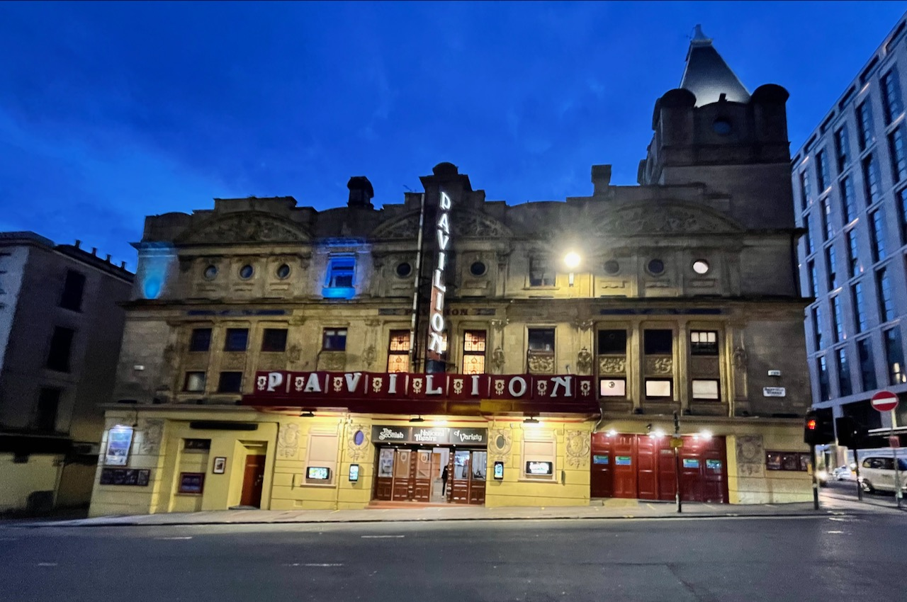 -
SEC Armadillo: SEC Armadillo is a modern concert hall and conference venue hosting a range of events, from music concerts to corporate functions. Attend world-class performances and conferences. 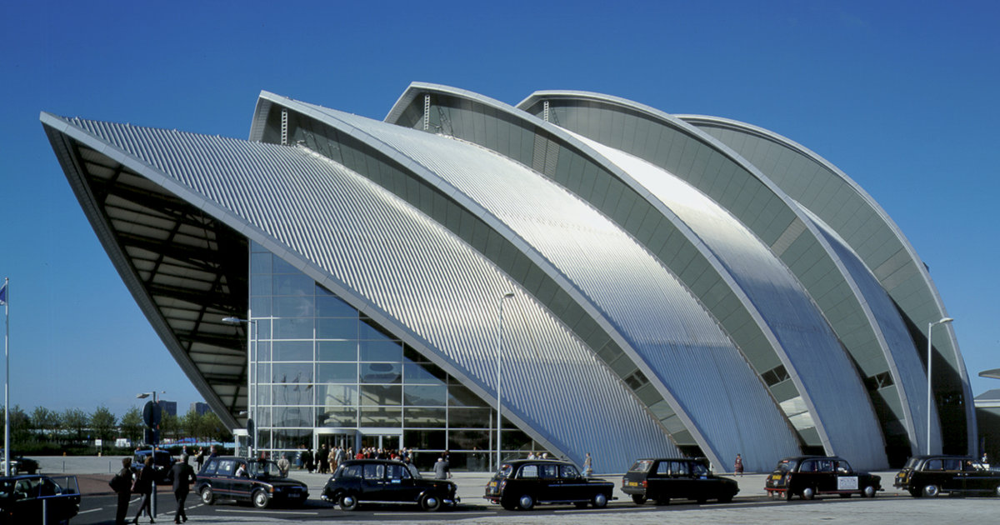
Whisky Distillery
Experience the art of whisky-making with a visit to a Glasgow distillery. Learn about the distillation process, sample different whiskies, and immerse yourself in Scotland's rich whisky heritage. 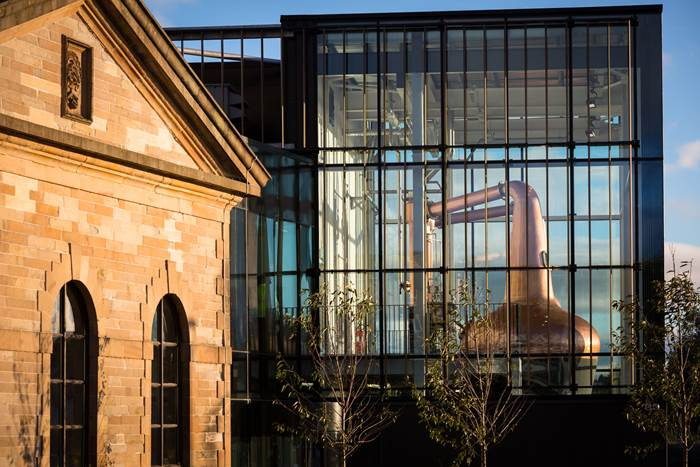